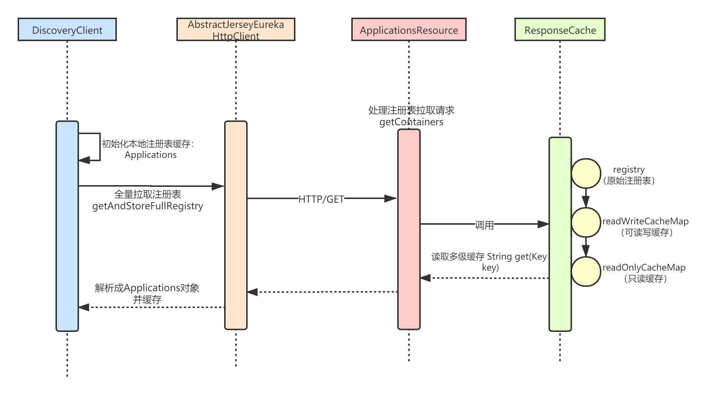
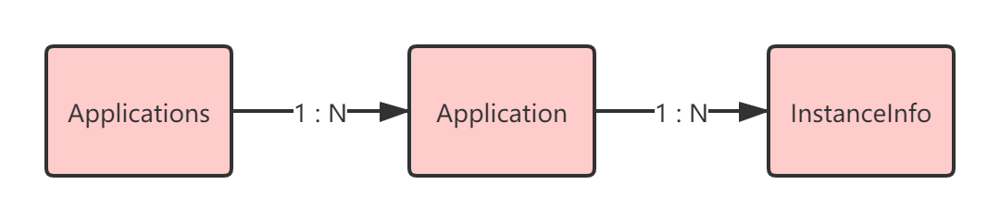
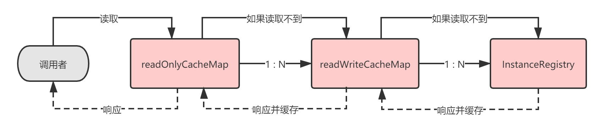
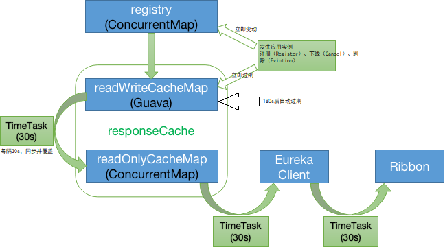

Eureka-Client完成自身的注册之后，接着我们就要来看Eureka-Client拉取注册表的逻辑了。Eureka-Client拉取注册表分为两种模式：全量拉取和增量拉取。
默认配置下，Eureka-Client 启动时，首先执行一次全量拉取注册表信息，然后在本地缓存，之后每 30 秒增量拉取，并跟本地缓存进行合并。
本章，我将讲解全量拉取注册表的逻辑，整体流程我用下面这张时序图表示。本章，读者应当重点掌握Eureka-Server端的注册表多级缓存机制。

DiscoveryClient在初始化时，会自动执行注册表的全量拉取：
/**
* DiscoveryClient.java
*/
// 注册表本地缓存
private final AtomicReference<Applications> localRegionApps = new AtomicReference<Applications>();
DiscoveryClient(ApplicationInfoManager applicationInfoManager, EurekaClientConfig config, AbstractDiscoveryClientOptionalArgs args, Provider<BackupRegistry> backupRegistryProvider) { //...
// 初始化注册表在本地的缓存
localRegionApps.set(new Applications());
//...
// 从 Eureka-Server 拉取注册表
if (clientConfig.shouldFetchRegistry() && !fetchRegistry(false)) {
fetchRegistryFromBackup();
}
//...
}
可以看到，保存在Eureka-Client本地的其实是一个Applications对象。
Applications是什么东西？其实就是注册的应用集合，它就是注册表在Eureka-Client侧的保存形式：

public class Applications {
//...
// 应用集合信息 hashcode，该变量用于校验增量获取的注册信息和 Eureka-Server 全量的注册信息是否一致
private String appsHashCode;
// 应用信息队列
private final AbstractQueue<Application> applications;
// 应用映射，key为应用名称
private final Map<String, Application> appNameApplicationMap;
public Applications() {
this(null, -1L, Collections.emptyList());
}
public void addApplication(Application app) {
appNameApplicationMap.put(app.getName().toUpperCase(Locale.ROOT), app);
addInstancesToVIPMaps(app, this.virtualHostNameAppMap, this.secureVirtualHostNameAppMap);
applications.add(app);
}
public List<Application> getRegisteredApplications() {
return new ArrayList<Application>(this.applications);
}
public Application getRegisteredApplications(String appName) {
return appNameApplicationMap.get(appName.toUpperCase(Locale.ROOT));
}
/**
* Gets the list of <em>instances</em> associated to a virtual host name.
*/
public List<InstanceInfo> getInstancesByVirtualHostName(String virtualHostName) {
return Optional.ofNullable(this.virtualHostNameAppMap.get(virtualHostName.toUpperCase(Locale.ROOT)))
.map(VipIndexSupport::getVipList)
.map(AtomicReference::get)
.orElseGet(Collections::emptyList);
}
public String getReconcileHashCode() {
TreeMap<String, AtomicInteger> instanceCountMap = new TreeMap<String, AtomicInteger>();
populateInstanceCountMap(instanceCountMap);
return getReconcileHashCode(instanceCountMap);
}
/**
* Populates the provided instance count map. The instance count map is used as part of the general
* app list synchronization mechanism.
*/
public void populateInstanceCountMap(TreeMap<String, AtomicInteger> instanceCountMap) {
for (Application app : this.getRegisteredApplications()) {
for (InstanceInfo info : app.getInstancesAsIsFromEureka()) {
AtomicInteger instanceCount = instanceCountMap.get(info.getStatus().name());
if (instanceCount == null) {
instanceCount = new AtomicInteger(0);
instanceCountMap.put(info.getStatus().name(), instanceCount);
}
instanceCount.incrementAndGet();
}
}
}
public static String getReconcileHashCode(TreeMap<String, AtomicInteger> instanceCountMap) {
String reconcileHashCode = "";
for (Map.Entry<String, AtomicInteger> mapEntry : instanceCountMap.entrySet()) {
reconcileHashCode = reconcileHashCode + mapEntry.getKey()
+ STATUS_DELIMITER + mapEntry.getValue().get()
+ STATUS_DELIMITER;
}
return reconcileHashCode;
}
//...
}
接着， 调用 DiscoveryClient#fetchRegistry(false) 方法，从 Eureka-Server 获取注册信息，因为applications.getRegisteredApplications().size() == 0，所以这里肯定是走全量拉取，实现代码如下：
/**
* DiscoveryClient.java
*/
private boolean fetchRegistry(boolean forceFullRegistryFetch) {
Stopwatch tracer = FETCH_REGISTRY_TIMER.start();
try {
// 1.获取本地缓存的注册表
Applications applications = getApplications();
if (clientConfig.shouldDisableDelta() // 禁用增量拉取注册表
|| (!Strings.isNullOrEmpty(clientConfig.getRegistryRefreshSingleVipAddress()))
|| forceFullRegistryFetch
|| (applications == null)
|| (applications.getRegisteredApplications().size() == 0)
|| (applications.getVersion() == -1))
{
logger.info("Disable delta property : {}", clientConfig.shouldDisableDelta());
logger.info("Single vip registry refresh property : {}", clientConfig.getRegistryRefreshSingleVipAddress());
logger.info("Force full registry fetch : {}", forceFullRegistryFetch);
logger.info("Application is null : {}", (applications == null));
logger.info("Registered Applications size is zero : {}",
(applications.getRegisteredApplications().size() == 0));
logger.info("Application version is -1: {}", (applications.getVersion() == -1));
// 2.执行全量拉取并缓存
getAndStoreFullRegistry();
} else {
// 3.执行增量拉取
getAndUpdateDelta(applications);
}
// 4.设置应用集合hashcode
applications.setAppsHashCode(applications.getReconcileHashCode());
// 打印本地缓存的注册应用实例数量
logTotalInstances();
} catch (Throwable e) {
logger.error(PREFIX + appPathIdentifier + " - was unable to refresh its cache! status = " + e.getMessage(), e);
return false;
} finally {
if (tracer != null) {
tracer.stop();
}
}
// ...
// 5.以拉取到的注册表为准，更新本地缓存中当前应用实例的状态（只更新缓存）
updateInstanceRemoteStatus();
return true;
}
上述updateInstanceRemoteStatus方法，其实就是设置lastRemoteInstanceStatus这个属性值：
private volatile InstanceInfo.InstanceStatus lastRemoteInstanceStatus = InstanceInfo.InstanceStatus.UNKNOWN;
private synchronized void updateInstanceRemoteStatus() {
// currentRemoteInstanceStatus用来暂存Server端该实例的状态
InstanceInfo.InstanceStatus currentRemoteInstanceStatus = null;
if (instanceInfo.getAppName() != null) {
Application app = getApplication(instanceInfo.getAppName());
if (app != null) {
InstanceInfo remoteInstanceInfo = app.getByInstanceId(instanceInfo.getId());
if (remoteInstanceInfo != null) {
currentRemoteInstanceStatus = remoteInstanceInfo.getStatus();
}
}
}
if (currentRemoteInstanceStatus == null) {
currentRemoteInstanceStatus = InstanceInfo.InstanceStatus.UNKNOWN;
}
// 如果状态发生了变化
if (lastRemoteInstanceStatus != currentRemoteInstanceStatus) {
// 触发 StatusChangeEvent 事件, 目前 Eureka 未提供默认的该事件监听器
onRemoteStatusChanged(lastRemoteInstanceStatus, currentRemoteInstanceStatus);
// 更新lastRemoteInstanceStatus
lastRemoteInstanceStatus = currentRemoteInstanceStatus;
}
}
最后，我们来看下真正的全量拉取注册表的逻辑——DiscoveryClient#getAndStoreFullRegistry(false) ：
private void getAndStoreFullRegistry() throws Throwable {
// 拉取次数
long currentUpdateGeneration = fetchRegistryGeneration.get();
logger.info("Getting all instance registry info from the eureka server");
// 1.利用网络通信组件EurekaTransport拉取注册表
Applications apps = null;
EurekaHttpResponse<Applications> httpResponse = clientConfig.getRegistryRefreshSingleVipAddress() == null
? eurekaTransport.queryClient.getApplications(remoteRegionsRef.get())
: eurekaTransport.queryClient.getVip(clientConfig.getRegistryRefreshSingleVipAddress(), remoteRegionsRef.get());
if (httpResponse.getStatusCode() == Status.OK.getStatusCode()) {
apps = httpResponse.getEntity();
}
logger.info("The response status is {}", httpResponse.getStatusCode());
if (apps == null) {
logger.error("The application is null for some reason. Not storing this information");
} else if (fetchRegistryGeneration.compareAndSet(currentUpdateGeneration, currentUpdateGeneration + 1)) {
// 2.更新本地缓存，filterAndShuffle用来打乱顺序
localRegionApps.set(this.filterAndShuffle(apps));
logger.debug("Got full registry with apps hashcode {}", apps.getAppsHashCode());
} else {
logger.warn("Not updating applications as another thread is updating it already");
}
}
上述操作在底层利用jersey client，发送HTTP/GET请求（比如http://localhost:8080/v2/apps），调用eureka server的getApplications restful接口，获取全量注册表，缓存在自己的本地。
/**
* AbstractJerseyEurekaHttpClient.java
*/
public EurekaHttpResponse<Applications> getApplications(String... regions) {
return getApplicationsInternal("apps/", regions);
}
private EurekaHttpResponse<Applications> getApplicationsInternal(String urlPath, String[] regions) {
ClientResponse response = null;
String regionsParamValue = null;
try {
WebResource webResource = jerseyClient.resource(serviceUrl).path(urlPath);
if (regions != null && regions.length > 0) {
regionsParamValue = StringUtil.join(regions);
webResource = webResource.queryParam("regions", regionsParamValue);
}
Builder requestBuilder = webResource.getRequestBuilder();
addExtraHeaders(requestBuilder);
response = requestBuilder.accept(MediaType.APPLICATION_JSON_TYPE).get(ClientResponse.class); // JSON
// 这里的Applications就是注册表
Applications applications = null;
if (response.getStatus() == Status.OK.getStatusCode() && response.hasEntity()) {
applications = response.getEntity(Applications.class);
}
return anEurekaHttpResponse(response.getStatus(), Applications.class)
.headers(headersOf(response))
.entity(applications)
.build();
} finally {
if (logger.isDebugEnabled()) {
logger.debug("Jersey HTTP GET {}/{}?{}; statusCode={}",
serviceUrl, urlPath,
regionsParamValue == null ? "" : "regions=" + regionsParamValue,
response == null ? "N/A" : response.getStatus()
);
}
if (response != null) {
response.close();
}
}
}
接着，我们来看下Eureka-Server接受并处理全量拉取的流程。Eureka-Client发送的拉取注册表的HTTP/GET请求是类似这样的：http://localhost:8080/v2/apps/。
在Eureka-Server端，由ApplicationsResource#getContainers()负责处理注册表拉取请求，可以看到注册表是从一个ResponseCache对象中获取的，所以整个Server端的处理流程核心就是ResponseCache：
/**
* ApplicationsResource.java
*/
private final ResponseCache responseCache;
public Response getContainers(@PathParam("version") String version,
@HeaderParam(HEADER_ACCEPT) String acceptHeader,
@HeaderParam(HEADER_ACCEPT_ENCODING) String acceptEncoding,
@HeaderParam(EurekaAccept.HTTP_X_EUREKA_ACCEPT) String eurekaAccept,
@Context UriInfo uriInfo,
@Nullable @QueryParam("regions") String regionsStr) {
// ...忽略Region相关
// Eureka-Server 启动完成，但是未处于就绪( Ready )状态，不接受全量拉取注册表的请求
if (!registry.shouldAllowAccess(isRemoteRegionRequested)) {
return Response.status(Status.FORBIDDEN).build();
}
// 1.设置响应报文格式
CurrentRequestVersion.set(Version.toEnum(version));
KeyType keyType = Key.KeyType.JSON;
String returnMediaType = MediaType.APPLICATION_JSON;
if (acceptHeader == null || !acceptHeader.contains(HEADER_JSON_VALUE)) {
keyType = Key.KeyType.XML;
returnMediaType = MediaType.APPLICATION_XML;
}
// 2.创建响应缓存(ResponseCache) 的键
Key cacheKey = new Key(Key.EntityType.Application,
ResponseCacheImpl.ALL_APPS,
keyType, CurrentRequestVersion.get(), EurekaAccept.fromString(eurekaAccept), regions
);
// 2.从响应缓存(ResponseCache)读取全量注册信息
Response response;
if (acceptEncoding != null && acceptEncoding.contains(HEADER_GZIP_VALUE)) {
// 关键是responseCache.getGZIP(cacheKey)
response = Response.ok(responseCache.getGZIP(cacheKey))
.header(HEADER_CONTENT_ENCODING, HEADER_GZIP_VALUE)
.header(HEADER_CONTENT_TYPE, returnMediaType)
.build();
} else {
response = Response.ok(responseCache.get(cacheKey))
.build();
}
return response;
}
下面我们就来看看ResponseCache这个二级缓存的基本代码。
com.netflix.eureka.registry.ResponseCache，响应缓存接口，接口代码如下 ：
public interface ResponseCache {
// 获取缓存
String get(Key key);
// 获取压缩后的缓存
byte[] getGZIP(Key key);
// 过期缓存
void invalidate(String appName, @Nullable String vipAddress, @Nullable String secureVipAddress);
AtomicLong getVersionDelta();
AtomicLong getVersionDeltaWithRegions();
}
其中， com.netflix.eureka.registry.Key，缓存键的实现代码如下：
public class Key {
public enum KeyType {
JSON, XML
}
public enum EntityType {
Application, VIP, SVIP
}
private final String entityName;
private final String[] regions;
// 请求参数类型
private final KeyType requestType;
// 请求 API 版本号
private final Version requestVersion;
// hashKey
private final String hashKey;
// 实体类型
private final EntityType entityType;
private final EurekaAccept eurekaAccept;
//...
}
ResponseCache接口的实现类是ResponseCacheImpl，它的核心是一套多级缓存机制，ResponseCacheImpl将缓存拆分成两层 ：
readOnlyCacheMap )；readWriteCacheMap )。默认配置下，当Eureka-Client发送请求过来读取全量注册表时，缓存读取策略如下：

Eureka-Server响应Client的多级缓存，实际上内部是调用了ResponseCacheImpl#get(...) 。可以看到，只读缓存readOnlyCacheMap本质就是个ConcurrentHashMap，而可读写缓存是一个LoadingCache封装对象：
/**
* ResponseCacheImpl.java
*/
// 原始注册表
private final AbstractInstanceRegistry registry;
// 只读注册表
private final ConcurrentMap<Key, Value> readOnlyCacheMap = new ConcurrentHashMap<Key, Value>();
// 可读写注册表
private final LoadingCache<Key, Value> readWriteCacheMap;
public String get(final Key key) {
// 是否开启只读缓存：通过参数`eureka.shouldUseReadOnlyResponseCache`配置，默认为true
return get(key, shouldUseReadOnlyResponseCache);
}
String get(final Key key, boolean useReadOnlyCache) {
// Vaule就是实际缓存的值
Value payload = getValue(key, useReadOnlyCache);
if (payload == null || payload.getPayload().equals(EMPTY_PAYLOAD)) {
return null;
} else {
return payload.getPayload();
}
}
Value getValue(final Key key, boolean useReadOnlyCache) {
Value payload = null;
try {
// 1.若开启只读缓存，则优先从readOnlyCacheMap读
if (useReadOnlyCache) {
final Value currentPayload = readOnlyCacheMap.get(key);
if (currentPayload != null) {
payload = currentPayload;
} else {
// 读不到则从readWriteCacheMap读
payload = readWriteCacheMap.get(key);
// 重新更新readOnlyCacheMap
readOnlyCacheMap.put(key, payload);
}
}
// 2.未开启只读缓存，直接从readWriteCacheMap读
else {
payload = readWriteCacheMap.get(key);
}
} catch (Throwable t) {
logger.error("Cannot get value for key :" + key, t);
}
return payload;
}
public class Value {
private final String payload;
private byte[] gzipped;
public Value(String payload) {
this.payload = payload;
if (!EMPTY_PAYLOAD.equals(payload)) {
// ...
try {
// ...省略GZIP压缩代码
gzipped = bos.toByteArray();
} catch (IOException e) {
gzipped = null;
} finally {
if (tracer != null) {
tracer.stop();
}
}
} else {
gzipped = null;
}
}
//...省略get方法
}
ResponseCacheImpl#getGzip(...)方法类似，只是对结果进行了压缩，这里就不赘述了。
我们关键来看下readWriteCacheMap可读写缓存，也就是LoadingCache，它是随着ResponseCacheImpl一起构造的：
/**
* ResponseCacheImpl.java
*/
ResponseCacheImpl(EurekaServerConfig serverConfig, ServerCodecs serverCodecs, AbstractInstanceRegistry registry) {
//...
this.readWriteCacheMap =
CacheBuilder.newBuilder().initialCapacity(1000) //最大容量1000
.expireAfterWrite(serverConfig.getResponseCacheAutoExpirationInSeconds(), TimeUnit.SECONDS)
.removalListener(new RemovalListener<Key, Value>() {
@Override
public void onRemoval(RemovalNotification<Key, Value> notification) {
Key removedKey = notification.getKey();
if (removedKey.hasRegions()) {
Key cloneWithNoRegions = removedKey.cloneWithoutRegions();
regionSpecificKeys.remove(cloneWithNoRegions, removedKey);
}
}
})
.build(new CacheLoader<Key, Value>() {
@Override
public Value load(Key key) throws Exception {
if (key.hasRegions()) {
Key cloneWithNoRegions = key.cloneWithoutRegions();
regionSpecificKeys.put(cloneWithNoRegions, key);
}
// 这里根据Key生成Value
Value value = generatePayload(key);
return value;
}
});
//...
}
可以看到，readWriteCacheMap是基于Google Guava的CacheBuilder构建的，它的最大容量是1000。它保存的Value是通过方法generatePayload生成的，最终就是通过从registry这个原始注册表（PeerAwareInstanceRegistryImpl）中获取Applications，然后编码转化放到Value里：
/**
* ResponseCacheImpl.java
*/
private Value generatePayload(Key key) {
//...
try {
String payload;
switch (key.getEntityType()) {
case Application:
boolean isRemoteRegionRequested = key.hasRegions();
if (ALL_APPS.equals(key.getName())) { //全量拉取
//...
//registry.getApplications()获取的就是全量的注册应用信息
payload = getPayLoad(key, registry.getApplications());
} else if (ALL_APPS_DELTA.equals(key.getName())) { //增量拉取
//...
payload = getPayLoad(key, registry.getApplicationDeltas());
} else {
//..
payload = getPayLoad(key, registry.getApplication(key.getName()));
}
break;
//...
}
return new Value(payload);
} finally {
//...
}
}
// 将Applications转换成缓存值
private String getPayLoad(Key key, Applications apps) {
EncoderWrapper encoderWrapper = serverCodecs.getEncoder(key.getType(), key.getEurekaAccept());
String result;
try {
// 将Applications对象编码
result = encoderWrapper.encode(apps);
} catch (Exception e) {
logger.error("Failed to encode the payload for all apps", e);
return "";
}
//...
return result;
}
Eureka-Server的ResponseCache存在过期机制，具体的过期策略一共有三种：主动过期、定时过期、被动过期：

当Eureka-Server端发生实例注册（Register）、下线（Cancel）、剔除（Eviction）时，会立即主动过期 readWriteCacheMap（默认延迟30s后再重新刷入） 。
举个例子，现在有一个应用A（ServiceA），部署了一个新的应用实例（Instance010）。接着发起服务注册，注册成功后，Eureka-Server就必须刷新
readWriteCacheMap这个缓存。它具体会调用ResponseCache.invalidate()，将之前缓存好的ALL_APPS这个Key对应的缓存过期掉。
我们之前讲解服务注册的Eureka-Server端处理流程时，注册完成后，AbstractInstanceRegistry.invalidateCache会执行，内部其实是调用了ResponseCache的invalidate方法：
private void invalidateCache(String appName, @Nullable String vipAddress, @Nullable String secureVipAddress) {
// invalidate cache
responseCache.invalidate(appName, vipAddress, secureVipAddress);
}
/**
* ResponseCacheImpl.java
*/
public void invalidate(String appName, @Nullable String vipAddress, @Nullable String secureVipAddress) {
// 遍历所有类型的缓存键，逐个过期
for (Key.KeyType type : Key.KeyType.values()) {
for (Version v : Version.values()) {
invalidate(
new Key(Key.EntityType.Application, appName, type, v, EurekaAccept.full),
new Key(Key.EntityType.Application, appName, type, v, EurekaAccept.compact),
new Key(Key.EntityType.Application, ALL_APPS, type, v, EurekaAccept.full),
new Key(Key.EntityType.Application, ALL_APPS, type, v, EurekaAccept.compact),
new Key(Key.EntityType.Application, ALL_APPS_DELTA, type, v, EurekaAccept.full),
new Key(Key.EntityType.Application, ALL_APPS_DELTA, type, v, EurekaAccept.compact)
);
if (null != vipAddress) {
invalidate(new Key(Key.EntityType.VIP, vipAddress, type, v, EurekaAccept.full));
}
if (null != secureVipAddress) {
invalidate(new Key(Key.EntityType.SVIP, secureVipAddress, type, v, EurekaAccept.full));
}
}
}
}
public void invalidate(Key... keys) {
for (Key key : keys) {
logger.debug("Invalidating the response cache key : {} {} {} {}, {}",
key.getEntityType(), key.getName(), key.getVersion(), key.getType(), key.getEurekaAccept());
// 最终调用了readWriteCacheMap（LoadingCache）的invalidate方法，底层基于Guava过期Key
readWriteCacheMap.invalidate(key);
//...
}
}
readWriteCacheMap在构建的时候，指定了一个自动过期的时间（默认值180秒），所以你往readWriteCacheMap中放入一个数据，180秒后就会自动过期掉：
this.readWriteCacheMap =
CacheBuilder.newBuilder().initialCapacity(1000)
// 配置eureka.responseCacheAutoExpirationInSeconds，设置写入过期时长。默认值：180 秒
.expireAfterWrite(serverConfig.getResponseCacheAutoExpirationInSeconds(), TimeUnit.SECONDS)
.removalListener(new RemovalListener<Key, Value>() {
@Override
public void onRemoval(RemovalNotification<Key, Value> notification) {
Key removedKey = notification.getKey();
if (removedKey.hasRegions()) {
Key cloneWithNoRegions = removedKey.cloneWithoutRegions();
regionSpecificKeys.remove(cloneWithNoRegions, removedKey);
}
}
})
.build(new CacheLoader<Key, Value>() {
@Override
public Value load(Key key) throws Exception {
if (key.hasRegions()) {
Key cloneWithNoRegions = key.cloneWithoutRegions();
regionSpecificKeys.put(cloneWithNoRegions, key);
}
Value value = generatePayload(key);
return value;
}
});
ResponseCacheImpl内部有个定时任务，默认每隔30秒对readOnlyCacheMap和readWriteCacheMap中的数据进行一次比对，如果数据不一致，那么就将readWriteCacheMap中的数据覆盖到readOnlyCacheMap中去。
ResponseCacheImpl(EurekaServerConfig serverConfig, ServerCodecs serverCodecs, AbstractInstanceRegistry registry) {
//...
//配置 eureka.responseCacheUpdateIntervalMs，设置任务执行频率，默认值：30秒
long responseCacheUpdateIntervalMs = serverConfig.getResponseCacheUpdateIntervalMs();
if (shouldUseReadOnlyResponseCache) {
// 开启一个定时调度任务
timer.schedule(getCacheUpdateTask(),
new Date(((System.currentTimeMillis() / responseCacheUpdateIntervalMs) * responseCacheUpdateIntervalMs)
+ responseCacheUpdateIntervalMs),
responseCacheUpdateIntervalMs);
}
//...
}
// ResponseCacheImpl.java
private TimerTask getCacheUpdateTask() {
return new TimerTask() {
@Override
public void run() {
// 循环readOnlyCacheMap的缓存键
for (Key key : readOnlyCacheMap.keySet()) {
//...
try {
CurrentRequestVersion.set(key.getVersion());
// 判断一、二级缓存至是否一致
Value cacheValue = readWriteCacheMap.get(key);
Value currentCacheValue = readOnlyCacheMap.get(key);
if (cacheValue != currentCacheValue) {
// 不一致则覆盖只读缓存
readOnlyCacheMap.put(key, cacheValue);
}
} catch (Throwable th) {
logger.error("Error while updating the client cache from response cache", th);
}
}
}
};
}
本章，我讲解了Eureka的全量拉取注册表流程，以及Eureka-Server端的注册表多级缓存机制，核心是缓存注册表的多级读取与三种过期策略，读者可以结合源码加深理解。
下一章，我将讲解Eureka-Client增量拉取注册表流程，以及该过程中核心的一致性Hash比对原理。